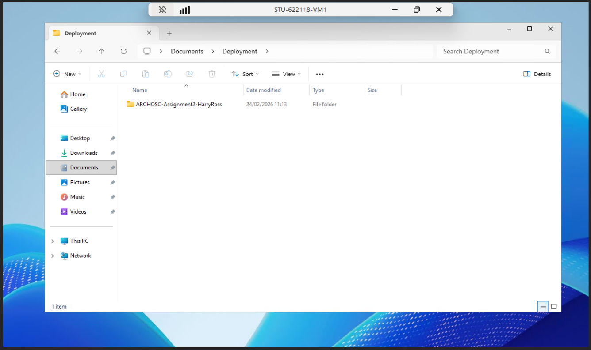
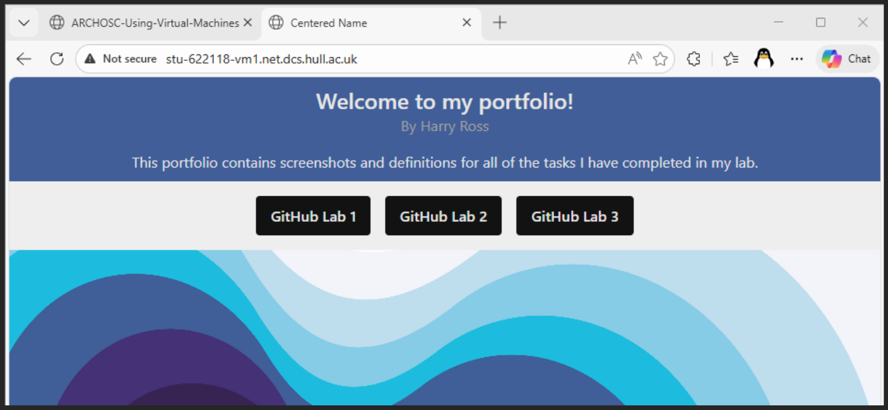
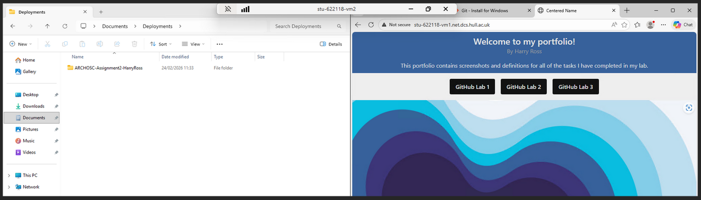
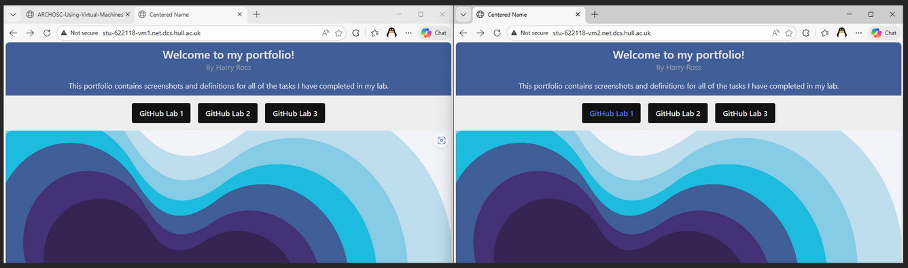

This lab demonstrates using a VM to deploy a site
Firstly, I installed git on my VM, created a “Deployments” folder under documents, and cloned my portfolio repo into this folder.

The files were then copied into C:/inetpub/wwwroot to be served by IIS, and the site was confirmed accessible over HTTP from my main machine:

I then connected to the development VM, cloned the repo there, and confirmed it could reach the hosted site:

Finally, I installed VS Code on the dev VM, edited the site directly from wwwroot, and confirmed the change only appeared on VM2 (note the blue text):

Today, we showed how we can use a VM to deploy a site and access it over the internet or local network.